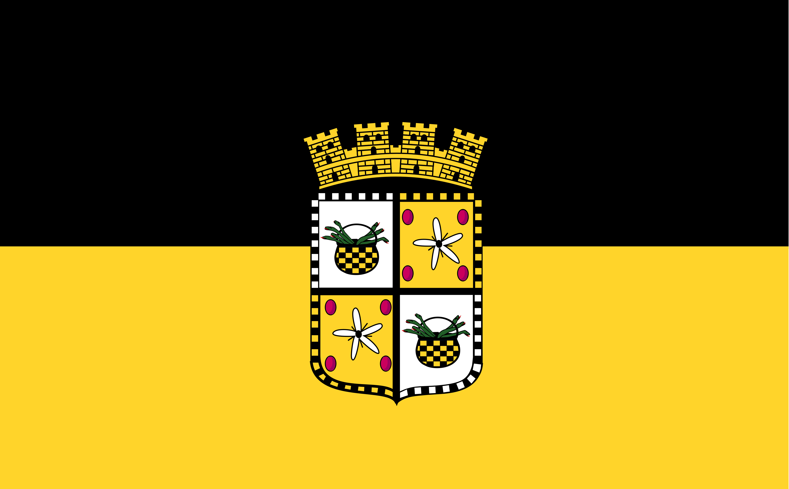
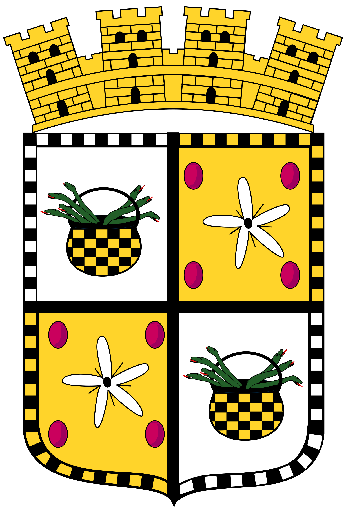
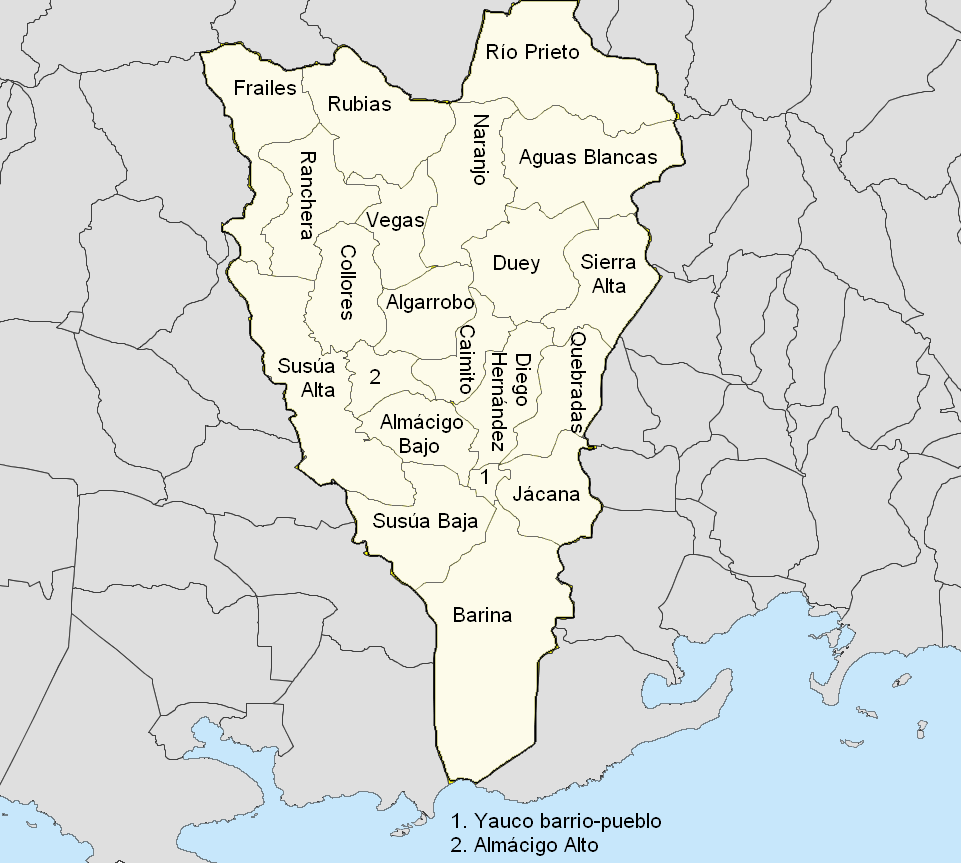

Nuestra Ciudad
Yauco es un municipio del suroeste de Puerto Rico reconocido por su tradición cafetalera, su historia y sus atractivos culturales. Se distingue por la producción de café, sus espacios naturales y proyectos artísticos que atraen visitantes de toda la isla.
Entre sus lugares más conocidos se encuentran Yaucromatic, el Lago Luchetti, el Salto Santa Clara y el Cerro Rodadero. Además, Yauco posee símbolos propios como su bandera y escudo, que forman parte de su identidad municipal.
Su mezcla de naturaleza, arte y gastronomía convierte a Yauco en un pueblo de gran valor turístico y cultural en Puerto Rico.

Bandera
La bandera de Yauco está compuesta por dos franjas horizontales: negra en la parte superior y oro en la inferior. En el centro aparece el escudo municipal como símbolo de identidad del pueblo.
El color negro representa la industria del café, elemento esencial en la historia y economía de Yauco, mientras que el color oro simboliza la caña de azúcar, otro cultivo importante en su desarrollo.
Estos colores también forman parte de la tradición deportiva del municipio y reflejan el orgullo histórico y cultural de Yauco.
Escudo
El escudo de Yauco está cuartelado por una cruz central que representa la cristiandad. Su diseño recoge elementos históricos relacionados con la herencia española y con figuras vinculadas al desarrollo del municipio.
Incluye calderas con serpientes, símbolo asociado a riqueza y poder, y una corona en forma de castillo que indica el estatus de ciudad. Además, su borde alterna castillos y leones, evocando la unión de antiguos reinos españoles.
En conjunto, el escudo refleja la historia, la hidalguía y la identidad cafetalera que distinguen a Yauco dentro de Puerto Rico.

Mapa

Himno de Yauco
Escucha el himno representativo del municipio de Yauco, parte importante de su identidad cultural.